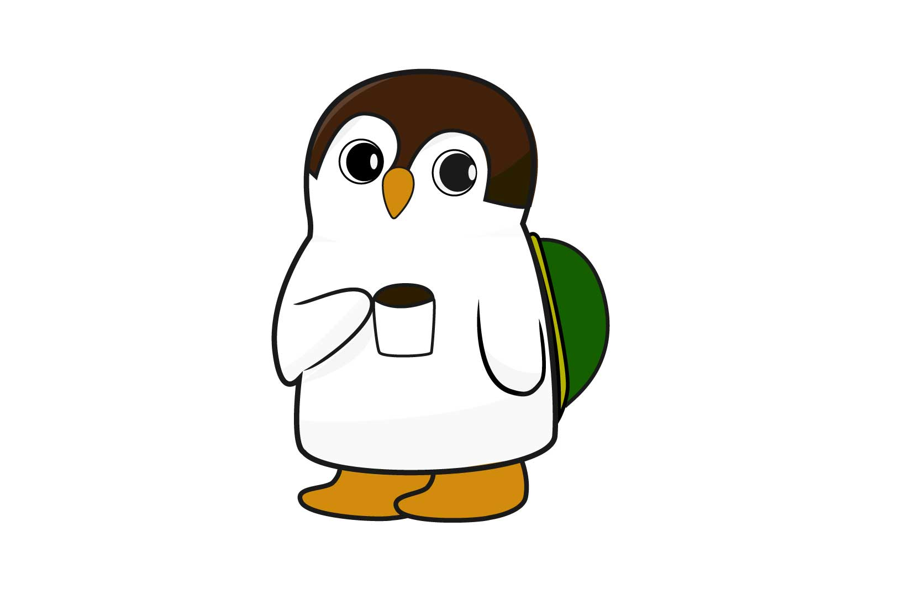

Web


Graphic




Profile
小池和輝(kazuki koike)
九州産業大学 芸術学部 ソーシャルデザイン学科 情報デザイン専攻
福岡工業大学短期大学部を卒業後、現在の大学へ編入学し主にWebデザインやグラフィックデザインを学んでいます。研究ではWebやデザインを活用した音楽制作に役立つサイトをテーマにWEB制作を行なっています。
スキル
Web制作
HTML5.CSS3.Javascript.Jquery.Githubなどを利用しWebサイトの設計からアップロードまで行えます。Wordpressでのサイト構築の学習も行なっています、また以前には複数人でのWeb開発も経験があります。
デザイン
Photoshop.Illustratorを用いてポスターやパンフレットのデザインを制作できます。コンセプトやイメージに合わせたデザインを心がけています
イラスト
Iluustratorを用いたベジェ曲線のイラストをメインに作成しています。デフォルメ系のイラストが得意です
Operator Fan (Webデザイン/コーディング)
サイトリンク
Tool:HTML.CSS.Atom.Github.Illustrator
ソフトウェアシンセサイザーのプリセットを公開し、誰もがシンセサイザーを使いやすくなる事を目的としたサイト。 分かりにくさのあるシンセサイザーに対して、取っ付きにくさを無くす為のサイトデザイン


HOUSE CAFE Moody (Webデザイン)
Tool:HTML.CSS.Javascript.Atom.Github
音楽グループの音源や情報をまとめる事を目的に作成。曲のジャケットによるイメージと音源が結びつきやすいことがコンセプトのWebサイト
Mofo (Webデザイン/コーディング)
サイトリンク
Tool:HTML.CSS.Javascript.Atom.Github
音楽グループの音源や情報をまとめる事を目的に作成。曲のジャケットによるイメージと音源が結びつきやすいことがコンセプトのWebサイト

Synthesizer illustration 1
Tool:Photoshop.Illustrator
Operator Fanで利用する為制作したイラスト。実際に存在するモノフォニックシンセサイザーを元に親しみやすくする為デフォルメを行った。Illustratorでイラスト制作後にPhotoshopでテクスチャを加えている。

Synthesizer illustration 2
Tool:Photoshop.Illustrator
Operator Fanで利用する為制作したイラスト。実際に存在する日本製FMシンセサイザーを元に親しみやすくする為デフォルメを行った。Illustratorでイラスト制作後にPhotoshopでテクスチャを加えている。

Synthesizer illustration 3
Tool:Photoshop.Illustrator
Operator Fanで利用する為制作したイラスト。大元となったソフトウェアシンセサイザーを元にデザイン。

Synthesizer illustration 4
Tool:Photoshop.Illustrator
Operator Fanで利用する為制作したイラスト。 実際に存在する日本製シンセサイザーを元に親しみやすくする為デフォルメを行った。Illustratorでイラスト制作後にPhotoshopでテクスチャを加えている。
SOTTO
Tool:Illustrator
新たにオープンするモダンで洗練された美容院を想定したA4チラシデザイン。コンセプトに合わせ文字組みフォント選びを工夫している。
NeoGuitarMuseum
Tool:Photoshop
架空のギター展覧会を想定しデザインしたA3ポスター。Neoと展覧会の名前に付くように近代的な印象を与えるデザインを心がけた。

LUXE
Tool:Illustrator
高級志向のケーキ屋を想定したA4三つ折りパンフレット。コンセプトに合わせた色使い、情報のまとめ方を意識し制作。
EP/Mofo
Tool:Illustrator
CDジャケットとして制作。EP盤とElectricPianoをかけたジャケットデザインをIllustratorで制作した。
Ya/Mofo
Tool:Photoshop
配信用にデザインされたジャケット。曲のイメージに合わせ写真をコラージュし、宇宙局資料のような質感のジャケットに仕上げた。

SYNTHESIZE RetroSamples
Tool:Illustrator
無料配布する楽曲制作素材のイメージジャケット。80sの雰囲気を表現。

Upsight/Mofo
Tool:Photoshop
配信用ジャケット。楽曲のイメージに合わせビンテージな要素とモダンな要素をミックス。
モマ蔵
Tool:Illustrator
津屋崎人形の一種であるモマ笛をモチーフにした架空のゆるキャラデザイン。福津市のウミガメやカフェなどをモマ笛とミックスさせ地域の魅了を伝える為のデザイン。